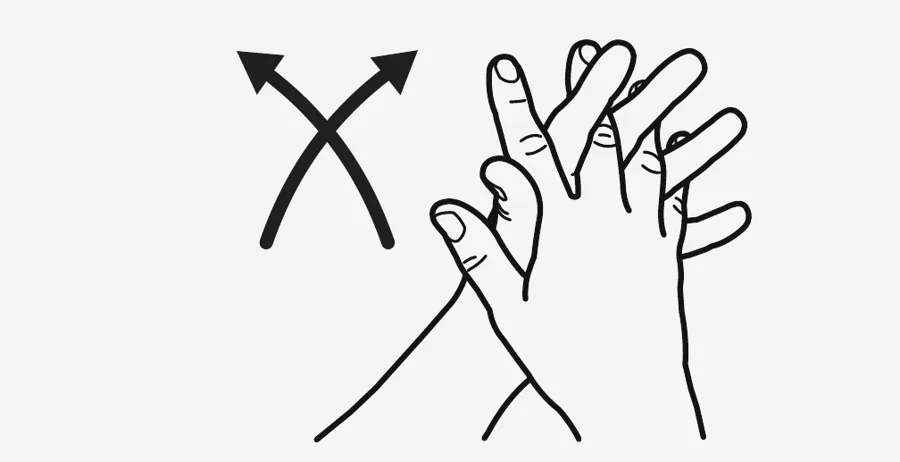

01 Kebersihan tangan
Kapan harus membersihkan tangan
Tangan adalah jalan utama perpindahan kuman di rumah sakit. Bersihkan tangan pada saat-saat berikut:
- Sebelum menyentuh pasien
- Sesudah menyentuh pasien
- Sesudah menyentuh barang di sekitar pasien, seperti tempat tidur, meja, dan pagar tempat tidur
- Sebelum makan atau menyuapi pasien
- Sesudah dari kamar mandi atau terkena cairan tubuh
02 Cara
Enam langkah mencuci tangan
Pakai cairan pembersih tangan (hand rub) selama 20–30 detik, atau sabun dan air mengalir selama 40–60 detik. Bila tangan tampak kotor, gunakan sabun dan air.





Ilustrasi: World Health Organization (WHO), poster How to Handwash?, 2009. Langkah mengikuti pedoman kebersihan tangan WHO.